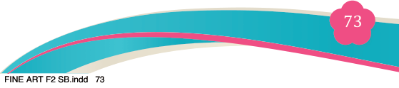
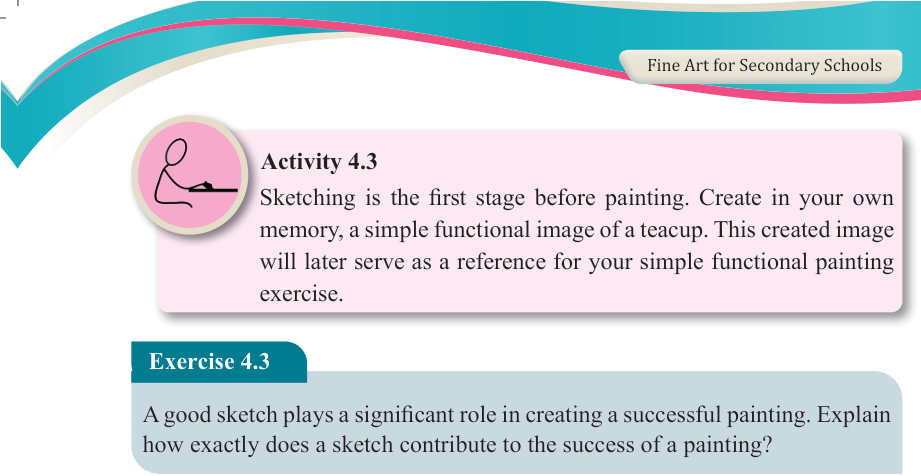
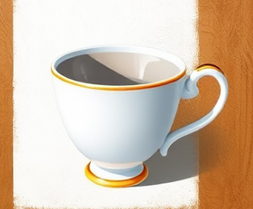
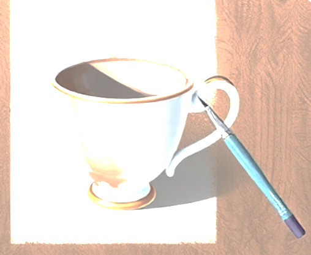

Fine Art for Secondary Schools

73

Student’s Book Form Two



Activity 4.3
Sketching is the first stage before painting. Create in your own memory, a simple functional image of a teacup. This created image will later serve as a reference for your simple functional painting exercise.
Exercise 4.3
A good sketch plays a significant role in creating a successful painting. Explain how exactly does a sketch contribute to the success of a painting?
Step 3: Choose subject colours
Although not necessary, choosing subject colours can help unify the colours in your painting. Choose one of the subject’s main shades and use it to apply a much diluted colour wash.
(i) Make sure the colour is not too dark to avoid blurring the drawing.
(ii) Wait until the background is dry before adding colours.


Figure 4.11: Introducing colour application on the teacup image
Figure 4.12: Subject colour of a teacup
image
Step 4: Applying colours
Apply the paint (mixed with water) in thin layers.
(i) Work from the lightest to the darkest layer of colour pigments. To obtain a lighter layer of colour pigment, add water.
(ii) Make sure each layer of paint dries before applying the next one. This allows your colours and touch to remain fresh and sharp.
04/08/2025 13:54